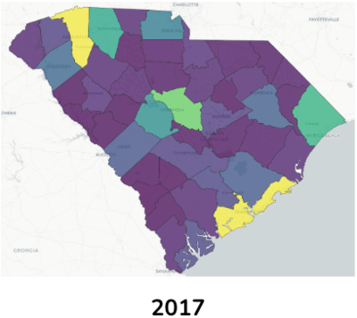
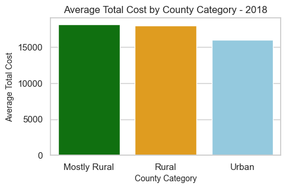
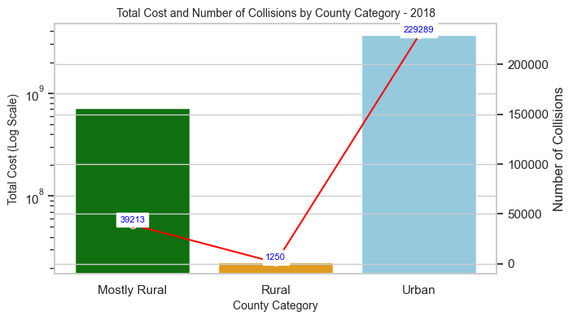
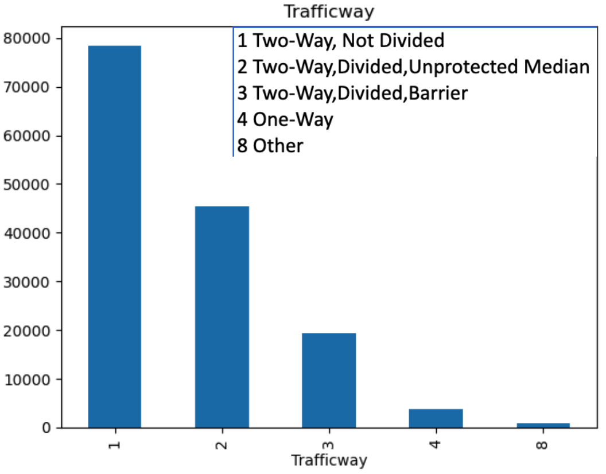

Traffic Data AnalysisImproving SC Roads Using Insights from DoT Traffic Data: Alive@25 Recommendations In summer 2024, SC dept provided us with data about traffic accidents in SC for 6 years (2017 to 2022), covering various aspects such as location, occupant details, and vehicle information. The non-profit provided us data about student safety training in schools (called Alive@25). We used traffic data to understand traffic patterns and areas of improvement. We used Alive@25 to understand training coverage and gaps. Using both, and other public data like census and cost of accidents, we made recommendations to reduce road deaths and other accident costs. The project involved creating interactive visualizations to understand patterns in collision incidents across different county categories (Urban, Mostly Rural, Rural). Key insights included identifying high-risk urban counties, economic impact of collisions, observing trends in collision rates and Alive@25 program participation.
Dataset
Location
57 variables
~42 MB ~138,867 records Occupant
17 variables
~28 MB ~350,237 records Truck, Bus Data
22 variables
~600 KB ~3,677 records Unit Info
47 variables
~58 MB ~261,194 records |
|
Analysis of Traffic Accident Data Here we present three broad analyses of the traffic accident data, focusing on visualization, economic impact, and road conditions.




|
|
Representative Publications
|
|
Recommendations
|